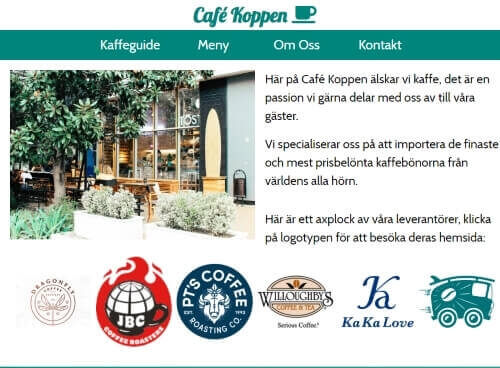
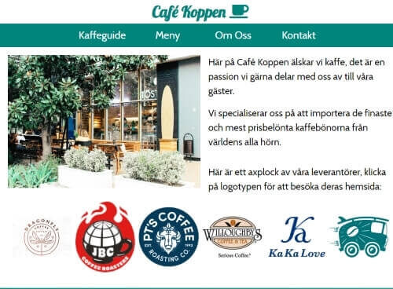
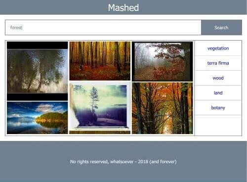
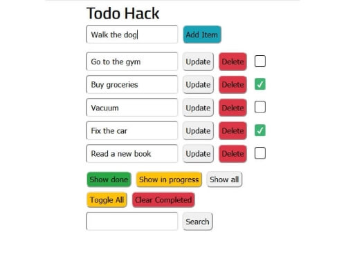
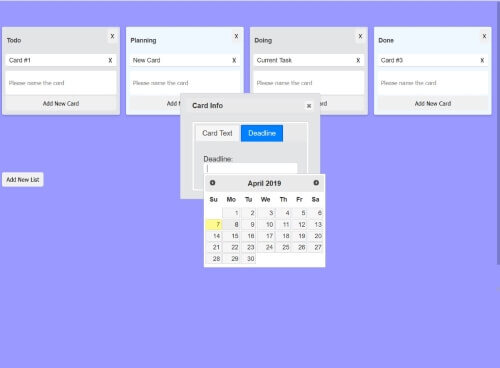
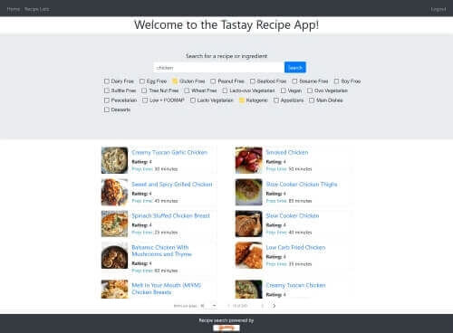
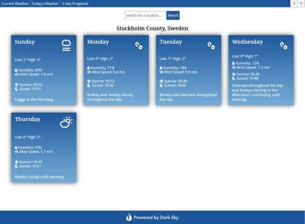

Café Koppen
Static website project done as part of my Full Stack Developer training.
Finished: Oct. 14 2018.
Github repoI'm a Fullstack Web Developer student at Chas Academy, you can check out my work below.
Static website project done as part of my Full Stack Developer training.
Finished: Oct. 14 2018.
Github repoJavascript version of the "Hangman" game done as part of my Full Stack Developer training.

Finished: Nov. 11 2018.
Github repoAPI Mashup written in Javascript. Search for Flickr images and get automatic synonym suggestions.
Finished: Nov. 25 2018.
Github repoTodo app written in PHP. Utilizes a basic MVC architecture with an HTML/CSS frontend.
Finished: Jan. 19 2019.
Github repoSimple Trello clone. Written in jQuery to learn the basics of the library.
Finished: Feb. 03 2019.
Github repoFullstack Recipe app. Frontend written in Angular 7 with a Laravel backend API.
Finished: March 06 2019.
Weather app built with React utilizing the Dark Sky API.
Finished: March 18 2019.
Github repoGroup project IMDb clone built with Laravel using the TMDb API.
Finished: April 17 2019.
Github repo